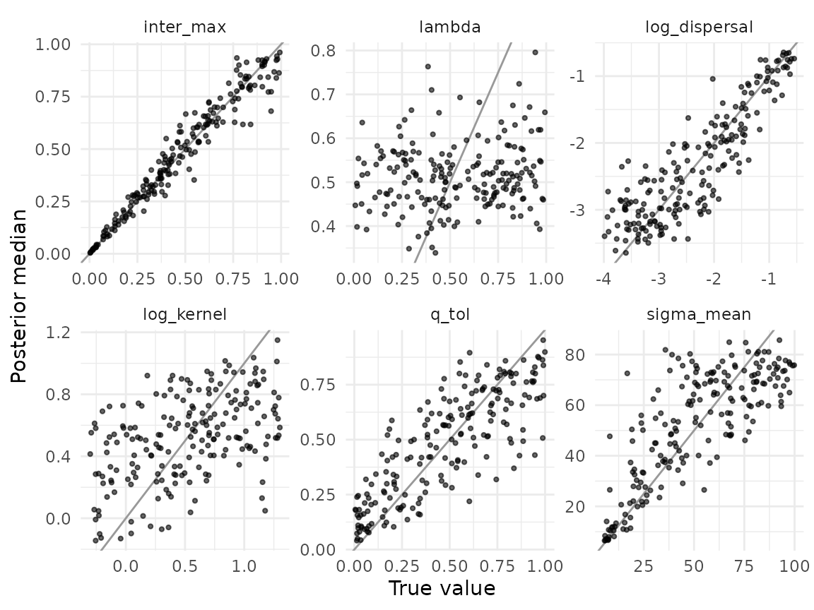
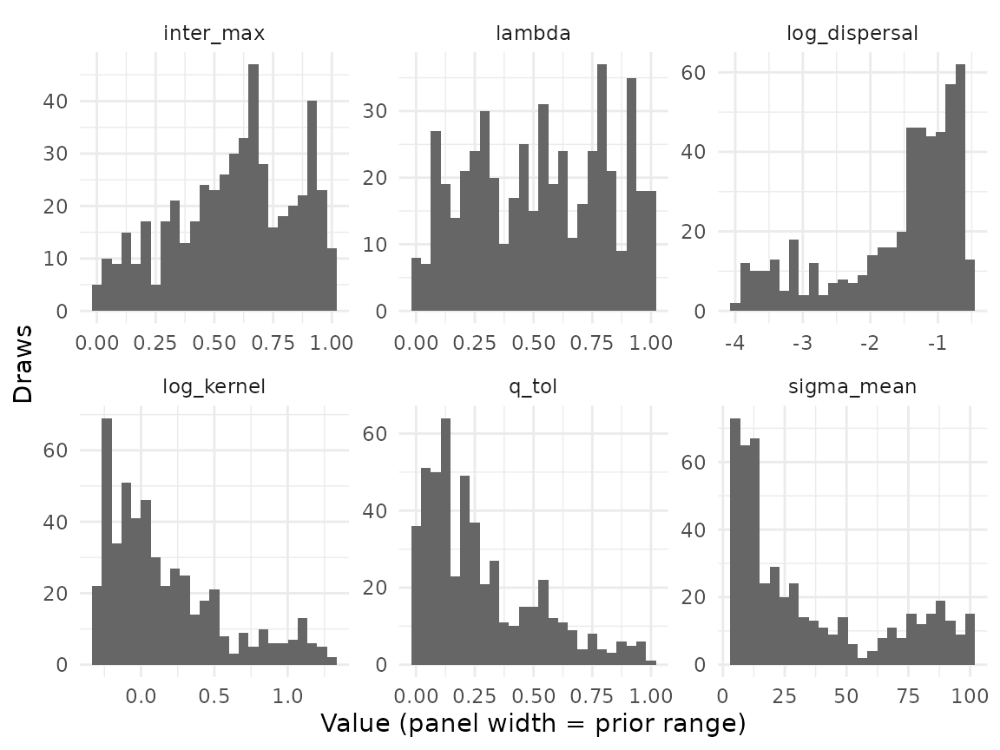
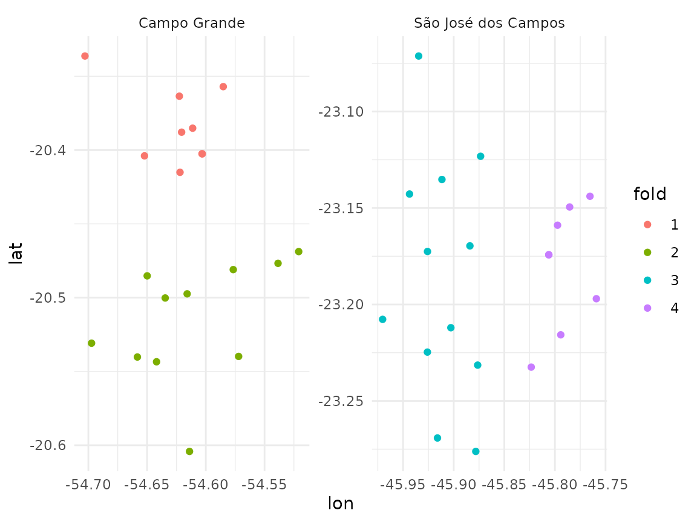

The simulations of comdynamite can be turned around: instead of asking what patterns a set of processes produces, we can ask which values of the parameters of a process make simulated metacommunities look like an observed one. Approximate Bayesian computation (ABC) does this by simulating many data sets with parameters drawn from a prior, describing each with summary statistics, and keeping the parameters whose statistics resemble the observed ones. With random forests (Pudlo et al. 2016; Raynal et al. 2019), there is no tolerance or distance to choose: a forest learns how the parameters relate to the statistics in the reference table and weighs its rows by their similarity to the observed data.
This vignette goes through the whole workflow with the anurans of 40
urban ponds in two Brazilian cities (anurans):
- build a landscape from the coordinates of the ponds and write the simulator;
- simulate a reference table with
abc_table(); - check that the parameters can be recovered at all, with
abc_recovery(); - choose between models with
abc_choose(); - estimate the parameters for the observed data with
abc_fit(), and check the fit withabc_diagnose(),abc_ppc()and cross-validation over spatial blocks withabc_cv().
The reference tables (about 20,000 simulations) take about a quarter
of an hour on six cores, and they and the forests were computed in
advance with data-raw/abc_anurans.R;
the rest runs here.
library(comdynamite)
library(ggplot2)
res <- readRDS("abc.rds")The data and the simulator
The ponds of each city are a few kilometres apart, and the two cities
are about 900 km from each other, so we treat them as two
metacommunities that share the values of the parameters. Each pond has a
hydrology score, from small, shallow and warm ponds (0) to large and
deep ones (100), and the urban cover within 1 km. Each city has its own
regional pool: the anurans that breed in lentic water and were recorded
by GBIF in its ecoregion and within 200 km of its ponds (see
?anurans). The pools are much larger than the sets of
species found in the ponds, so the simulations must explain which
species of the region reach and persist in the ponds.
table(anurans$city)
#>
#> Campo Grande São José dos Campos
#> 20 20
c(recorded = ncol(anurans$comm), pool = ncol(anurans$pool))
#> recorded pool
#> 44 155
tapply(rowSums(anurans$pool), anurans$city, max)
#> Campo Grande São José dos Campos
#> 53 146
city <- ifelse(anurans$city == "Campo Grande", "cg", "sjc")
pool <- anurans$pool
rownames(pool) <- paste0("site", seq_along(city))landscape_points() keeps the real layout of the ponds.
With lonlat = TRUE, distances are great-circle distances in
kilometres, and disp_scale is the scale of the exponential
dispersal kernel in kilometres.
ponds <- landscape_points(anurans$coords, anurans$env[, "hydrology"], disp_scale = 2,
lonlat = TRUE)
ponds
#> <mc_landscape> 40 sites; points, exponential dispersal kernel
#> environment: 0 to 100The model has six parameters: the fraction of individuals that
emigrate at each step (log_dispersal, on a log10 scale),
the scale of the dispersal kernel (log_kernel, log10 km),
the strength of competition between the most closely related species
(inter_max, with competition decreasing with phylogenetic
distance), the mean niche breadth along the hydrology axis
(sigma_mean), the phylogenetic signal of the niche optima
(lambda, Pagel’s lambda), and the share of species that
tolerate any urban cover (q_tol). Following the chapter
from which the data come, each of the other species gets a threshold
drawn from U(0, 100)% and is kept out of ponds whose urban cover exceeds
it; the filter acts on the pool of each pond, before the dynamics. The
simulator takes one draw of the parameters (scenario) and
the objects shared by all simulations (shared):
shared <- list(tree = anurans$tree, coords = anurans$coords, env = anurans$env[, "hydrology"],
urban = anurans$env[, "urban_cover"], pool = pool, city = city)
prior <- list(log_dispersal = c(-4, log10(0.3)), log_kernel = log10(c(0.5, 20)),
inter_max = c(0, 1), sigma_mean = c(5, 100), lambda = c(0, 1), q_tol = c(0, 1))
urban_pool <- function(pool, urban, q_tol) {
threshold <- ifelse(runif(ncol(pool)) < q_tol, Inf, runif(ncol(pool), 0, 100))
filtered <- pool * outer(urban, threshold, "<=")
lost <- colSums(filtered) == 0 # a species excluded everywhere keeps its pool
filtered[, lost] <- pool[, lost]
filtered
}
simulate <- function(scenario, shared) {
landscape <- landscape_points(shared$coords, shared$env, 10^scenario$log_kernel, lonlat = TRUE)
simulate_metacommunity(landscape,
species_traits(shared$tree, scenario$lambda,
sigma_mean = scenario$sigma_mean,
sigma_sd = scenario$sigma_mean / 2),
competition_matrix(shared$tree, "phylo",
inter_max = scenario$inter_max),
dispersal = 10^scenario$log_dispersal, n_steps = 500,
pool = urban_pool(shared$pool, shared$urban, scenario$q_tol))
}
set.seed(1)
sim <- simulate(list(log_dispersal = -2, log_kernel = 0.3, inter_max = 0.5, sigma_mean = 20,
lambda = 0.5, q_tol = 0.3), shared)
rowSums(sim$abundance > 0)[1:10]
#> site1 site2 site3 site4 site5 site6 site7 site8 site9 site10
#> 11 13 11 8 11 12 12 5 10 13Summary statistics
The observed data are counts from surveys, whose totals depend on
effort and on how easily each species is detected, so we describe both
the observed and the simulated metacommunities by incidence alone: the
statistics of summary_stats() that need no abundances (mean
and total richness, beta diversity, occupancy, the standardised effect
sizes of MPD and MNTD, and distance decay), plus the correlations of
richness and of compositional dissimilarity with hydrology. They are
computed separately for each city, with the prefixes cg_
and sjc_, over the species of its regional pool, which is
also the pool of the null model of the standardised effect sizes. See
data-raw/abc_anurans.R for the function; the observed
statistics are
round(res$observed[grepl("^(cg|sjc)_", names(res$observed))], 3)
#> cg_alpha cg_gamma cg_beta cg_occupancy
#> 8.950 27.000 3.017 0.331
#> cg_occupancy_sd cg_ses_mpd cg_ses_mntd cg_decay
#> 0.254 -0.810 -0.219 0.162
#> cg_richness_env cg_composition_env sjc_alpha sjc_gamma
#> 0.263 -0.073 7.850 26.000
#> sjc_beta sjc_occupancy sjc_occupancy_sd sjc_ses_mpd
#> 3.312 0.302 0.278 -0.198
#> sjc_ses_mntd sjc_decay sjc_richness_env sjc_composition_env
#> 0.015 0.225 0.103 -0.030With the simulator and the statistics in hand,
abc_table() draws parameters uniformly from the prior and
runs one simulation per draw, in parallel with future:
Can the parameters be recovered?
Before looking at the observed data, we ask whether the statistics
carry information about each parameter. abc_recovery()
leaves 200 simulations out of the reference table, treats each as if it
were observed, and compares the estimates with the true values. A
parameter is worth estimating when the estimates follow the truth (R²
well above zero) and the 90% intervals contain the truth about 90% of
the time.
print(res$recovery, digits = 2)
#> parameter n r2 bias coverage coverage_se width
#> 1 log_dispersal 200 0.771 0.00448 0.97 0.011 0.49
#> 2 log_kernel 200 0.220 -0.00325 0.89 0.023 0.80
#> 3 inter_max 200 0.948 0.00014 0.94 0.017 0.23
#> 4 sigma_mean 200 0.625 0.00891 0.96 0.013 0.60
#> 5 lambda 200 -0.012 -0.02265 0.91 0.021 0.89
#> 6 q_tol 200 0.668 0.00196 0.92 0.019 0.60
ggplot(res$estimates, aes(truth, estimate)) +
geom_abline(colour = "grey60") +
geom_point(size = 0.8, alpha = 0.6) +
facet_wrap(~parameter, scales = "free") +
labs(x = "True value", y = "Posterior median") +
theme_minimal()
Competition (inter_max) and emigration are well
recovered, and niche breadth and tolerance to urban cover reasonably so,
while the scale of the kernel is only weakly identified and the
phylogenetic signal of the niche (lambda) not at all: with
incidence in 40 ponds, its posterior will be its prior. The intervals
have about the right coverage for all six, so the posterior of
lambda is honest about this, just uninformative.
Which model?
The same statistics may come from metacommunities without
competition. We simulated a second table with inter_max
fixed at zero (the other five parameters from the same priors) and let
abc_choose() tell the two models apart:
res$choice$error
#> [1] 0.005661606
res$choice$confusion
#> phylogenetic none
#> phylogenetic 9867 94
#> none 19 9979
print(res$chosen, digits = 2)
#> observation model probability votes_phylogenetic votes_none
#> 1 1 phylogenetic 0.99 493 7The out-of-bag error shows that the two models are easy to tell apart when one of them is true. For the observed data, 493 of the 500 trees vote for the model with phylogenetic competition, and the posterior probability of that model is 0.99.
The posterior
abc_fit() grows one regression forest per parameter, and
predict() gives the posterior median and a 90% interval for
the observed statistics:
print(res$posterior, digits = 2)
#> observation parameter estimate low high mean
#> 1 1 log_dispersal -1.025 -3.456 -0.59 -1.28
#> 2 1 log_kernel 0.049 -0.284 1.02 0.15
#> 3 1 inter_max 0.566 0.342 0.87 0.58
#> 4 1 sigma_mean 29.815 6.227 98.15 43.81
#> 5 1 lambda 0.751 0.092 0.97 0.65
#> 6 1 q_tol 0.176 0.013 0.63 0.23The rows of the reference table that the forests weigh give an approximate sample from the posterior, which we can set against the uniform prior:
draws <- stack(res$draws[names(res$prior)])
limits <- data.frame(ind = names(res$prior), low = sapply(res$prior, `[`, 1),
high = sapply(res$prior, `[`, 2))
ggplot(draws, aes(values)) +
geom_histogram(bins = 25, fill = "grey40") +
geom_blank(aes(x = low), limits) + geom_blank(aes(x = high), limits) +
facet_wrap(~ind, scales = "free") +
labs(x = "Value (panel width = prior range)", y = "Draws") +
theme_minimal()
These draws use the mean of the weights of the six forests, so they are broader than the intervals of each parameter.
Checking the fit
A posterior is only as good as the model behind it.
abc_diagnose() asks whether the observed statistics lie
within the range of the reference table and how many rows carry the
weight (effective sample size, ESS):
print(res$diagnose, digits = 2)
#> observation parameter n_positive ess khat khat_threshold n_outside
#> 1 1 log_dispersal 333 100 0.310 0.60 0
#> 2 1 log_kernel 457 168 0.341 0.62 0
#> 3 1 inter_max 469 149 0.373 0.63 0
#> 4 1 sigma_mean 388 130 0.178 0.61 0
#> 5 1 lambda 404 167 -0.043 0.62 0
#> 6 1 q_tol 352 116 0.118 0.61 0
#> outside
#> 1
#> 2
#> 3
#> 4
#> 5
#> 6A posterior predictive check compares the observed statistics with those of the simulations drawn from the posterior. It is most telling for statistics left out of the fit, so we fitted a second set of forests without the phylogenetic statistics and checked those:
print(res$ppc_phylo, digits = 2)
#> statistic observed median low high p n
#> 1 cg_ses_mpd -0.810 1.03 -0.063 1.6 0.004 500
#> 2 cg_ses_mntd -0.219 0.33 -0.788 1.5 0.416 500
#> 3 sjc_ses_mpd -0.198 1.41 0.525 2.2 0.028 500
#> 4 sjc_ses_mntd 0.015 0.23 -0.741 1.6 0.660 500The model chosen with a posterior probability of 0.99 fails here. With competition among close relatives, the simulated ponds hold species more distantly related than expected from the regional pool (standardised MPD above zero), whereas in the observed ponds the species are as related as, or more related than, random draws from the pool. The observed MPD is in the lower tail in both cities (p = 0.004 in Campo Grande and 0.028 in São José dos Campos). With all the statistics in the fit, the forests pull the posterior towards the observed MPD and the misfit is milder:
print(res$ppc_all[c("statistic", "observed", "median", "low", "high", "p")], digits = 2)
#> statistic observed median low high p
#> 1 cg_alpha 8.950 7.05 4.100 16.33 0.512
#> 2 cg_gamma 27.000 19.00 10.000 34.00 0.328
#> 3 cg_beta 3.017 2.56 1.493 3.76 0.468
#> 4 cg_occupancy 0.331 0.39 0.266 0.67 0.468
#> 5 cg_occupancy_sd 0.254 0.26 0.181 0.32 0.976
#> 6 cg_ses_mpd -0.810 0.81 -0.720 1.56 0.076
#> 7 cg_ses_mntd -0.219 0.21 -0.867 1.26 0.524
#> 8 cg_decay 0.162 0.06 -0.114 0.25 0.280
#> 9 cg_richness_env 0.263 0.22 -0.086 0.57 0.824
#> 10 cg_composition_env -0.073 0.05 -0.093 0.56 0.200
#> 11 sjc_alpha 7.850 9.72 6.248 28.77 0.504
#> 12 sjc_gamma 26.000 27.00 16.000 66.00 0.928
#> 13 sjc_beta 3.312 2.79 1.519 4.27 0.452
#> 14 sjc_occupancy 0.302 0.36 0.234 0.66 0.452
#> 15 sjc_occupancy_sd 0.278 0.27 0.162 0.34 0.888
#> 16 sjc_ses_mpd -0.198 1.08 -0.237 1.98 0.124
#> 17 sjc_ses_mntd 0.015 0.14 -0.938 1.53 0.752
#> 18 sjc_decay 0.225 0.20 0.040 0.41 0.816
#> 19 sjc_richness_env 0.103 -0.18 -0.631 0.20 0.228
#> 20 sjc_composition_env -0.030 0.19 0.038 0.64 0.020Why, then, does model choice favour competition so strongly? The
statistics that weigh most in the forest of inter_max are
the mean and total richness of each city:
head(res$importance[res$importance$parameter == "inter_max", ], 4)
#> parameter statistic importance
#> 1 inter_max sjc_gamma 0.3411521
#> 2 inter_max sjc_alpha 0.2061290
#> 3 inter_max cg_gamma 0.2010290
#> 4 inter_max cg_alpha 0.1227917With pools of 50 to 150 species, the observed ponds hold few of them, and among the processes in the simulator, competition is the one that can keep richness that low. Any process that limits richness but is missing from the model, such as colonisation from a region where most species are rare, may therefore be read as competition. The phylogenetic statistics, which measure who coexists rather than how many, seem to point instead to a filter that favours some clades, for instance a tolerance to urban cover shared by related species, whereas the filter of the simulator acts at random with respect to phylogeny. These are hypotheses for a better model, not conclusions: the check says what the model misses, not why.
Leaving out total richness and beta diversity (total over mean richness) changes little, so the choice does not rest on them alone:
print(res$reduced$chosen, digits = 2)
#> observation model probability votes_phylogenetic votes_none
#> 1 1 phylogenetic 0.98 483 17
print(res$reduced$posterior, digits = 2)
#> observation parameter estimate low high mean
#> 1 1 log_dispersal -0.989 -3.455 -0.61 -1.25
#> 2 1 log_kernel 0.091 -0.272 1.07 0.19
#> 3 1 inter_max 0.659 0.334 0.96 0.65
#> 4 1 sigma_mean 26.920 5.462 95.68 39.89
#> 5 1 lambda 0.751 0.081 0.97 0.66
#> 6 1 q_tol 0.184 0.016 0.67 0.25Cross-validation over space
The last check asks whether the model fitted to some ponds predicts
the others. With spatial blocks, the ponds left out are not neighbours
of those kept (Roberts et al. 2017). We split each city into two blocks
with spatial_folds(), so that each of the four folds leaves
out half of one city, and fold_summarise() computed the
statistics of the ponds kept and of those left out in every
simulation:
ggplot(data.frame(anurans$coords, fold = factor(res$folds), city = anurans$city),
aes(lon, lat, colour = fold)) +
geom_point() +
facet_wrap(~city, scales = "free") +
theme_minimal()
abc_cv() fits the forests on the statistics of the ponds
kept and predicts those of the ponds left out. summary()
gives, for each statistic, the fraction of folds in which the observed
value fell inside the 90% predictive interval:
print(res$cv_summary, digits = 2)
#> statistic n coverage z_mean z_rms rejected
#> 1 alpha 4 1.00 0.067 0.64 0.00
#> 2 beta 4 1.00 1.004 1.06 0.00
#> 3 composition_env 4 0.75 -1.053 1.10 0.25
#> 4 decay 4 0.50 0.480 2.59 0.50
#> 5 gamma 4 0.75 0.724 1.33 0.00
#> 6 occupancy 4 1.00 -0.859 0.90 0.00
#> 7 occupancy_sd 4 1.00 -0.231 0.35 0.00
#> 8 richness_env 4 1.00 0.567 0.84 0.00
#> 9 ses_mntd 4 1.00 -0.411 0.63 0.00
#> 10 ses_mpd 4 0.25 -2.556 2.65 0.75With only four folds, these fractions are coarse, but most statistics of the ponds left out are predicted. The exceptions repeat the posterior predictive check: the standardised MPD of the ponds left out falls below the prediction in most folds, so the misfit is not confined to a part of either city. Distance decay misses in two folds, once above and once below the prediction; it rests on few pairs of ponds within half a city, so these misses may be noise, but they may also mean that a single exponential kernel for both cities is too simple a description of space.
What this example shows
The workflow ran from a simulator to checks of the fit, and each step
said something the previous one could not. Recovery showed, before we
looked at the data, that lambda cannot be learned from
them. Model choice preferred competition among close relatives with a
probability near one, and the posterior predictive checks and
cross-validation then showed that this model does not reproduce the
phylogenetic structure of the ponds, and suggested where to look next: a
filter conserved in the phylogeny, or limits to colonisation from the
region. An earlier version of this analysis, with the pool of each city
restricted to the species recorded there, made the observed total
richness the largest value a simulation could reach, and that bound
alone pushed the estimate of competition towards zero; the choice of the
regional pool matters as much as the choice of the model. The analysis
is meant to illustrate the functions, not to test hypotheses about these
frogs, which would also need a model of detection if abundances were
used (see observe_detection()).
References
Pudlo, P., Marin, J.-M., Estoup, A., Cornuet, J.-M., Gautier, M., & Robert, C. P. (2016). Reliable ABC model choice via random forests. Bioinformatics, 32, 859–866. https://doi.org/10.1093/bioinformatics/btv684
Raynal, L., Marin, J.-M., Pudlo, P., Ribatet, M., Robert, C. P., & Estoup, A. (2019). ABC random forests for Bayesian parameter inference. Bioinformatics, 35, 1720–1728. https://doi.org/10.1093/bioinformatics/bty867
Roberts, D. R., Bahn, V., Ciuti, S., Boyce, M. S., Elith, J., Guillera-Arroita, G., Hauenstein, S., Lahoz-Monfort, J. J., Schröder, B., Thuiller, W., Warton, D. I., Wintle, B. A., Hartig, F., & Dormann, C. F. (2017). Cross-validation strategies for data with temporal, spatial, hierarchical, or phylogenetic structure. Ecography, 40, 913–929. https://doi.org/10.1111/ecog.02881